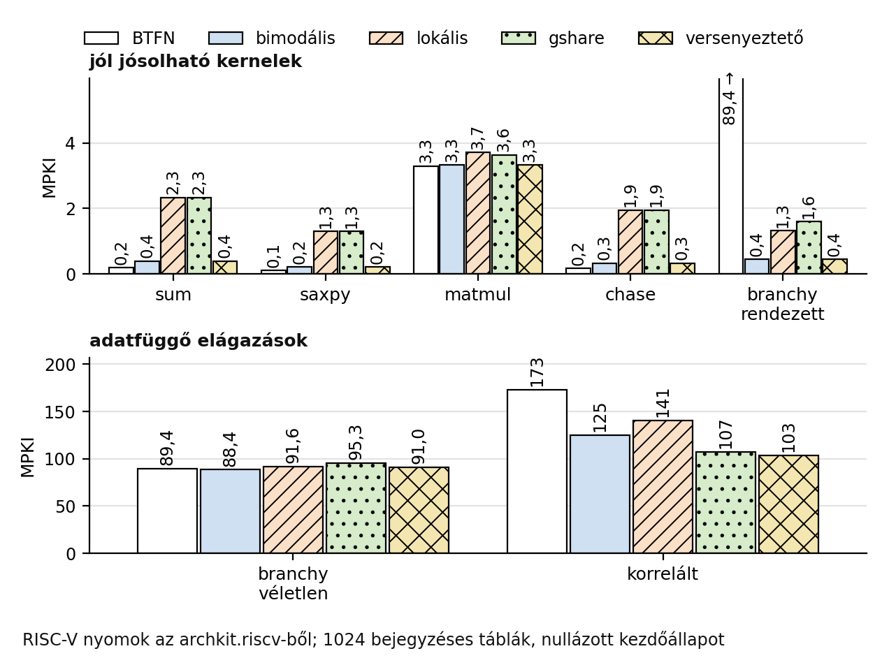

Nézzünk három ártatlan sort, amelyet egy ciklus véletlen biteken hajt végre:
if (a) x++;
if (b) y++;
if (a && b) z++;Az és fele-fele eséllyel igaz, egymástól függetlenül. Az első két elágazást senki nem tudja megjósolni. A harmadik azonban teljesen meghatározott, ha ismerjük az előző kettőt. A Statikus becslés és a kétbites számláló alfejezet bimodális becslője ezt nem látja: minden elágazást magában néz, és a harmadikon a szimulációnk szerint 29%-ban téved. Egy olyan becslő, amely a megelőző elágazások kimenetét is figyeli, 1% alá viheti ezt.
Ugyanez magyarázza az előző alfejezet nyitott pontját: a váltakozó és a 8 periódusú mintát a labor P-magja megtanulta, pedig a kétbites számláló nem képes rá. Emlékezet kell: az előzmény (history).
Vezessünk egy kis eltolóregisztert, amelybe minden feltételes elágazás kimenete bekerül (T = 1, N = 0), a legrégebbi bit kicsúszik. Ez a globális előzményregiszter (global history register). A harmadik elágazás előtt a két legfrissebb bit éppen a két előző feltétel eredménye. Ha a becslő a számlálót nemcsak a PC-vel, hanem az előzménnyel is választja ki, a négy lehetséges esetnek (, négy kombinációja) külön számlálója lesz, és mindegyik hamar megtanulja a saját, mindig azonos választ.
Kétféle emlékezet lehet:
TTNTTN…).Az alábbi ábra bal felső része a legelterjedtebb egyszerű megoldást, a gshare becslőt mutatja: a PC bitjeit és az előzményt kizáró vagy (XOR) kapcsolja össze indexszé.
A görbéken figyeld meg, hogy több előzmény nem mindig jobb: a 16 bejegyzéses tábla 2 bit után gyorsan romlik, a nagyobb tábla később.
Definíció. Kétszintű becslőnek (two-level predictor) nevezzük azt, amelyben az első szint egy előzményt ad, a második szint pedig egy mintatábla (pattern history table, PHT) kétbites számlálókkal, amelyet az előzmény (és esetleg a PC) indexel [S-YEH-PATT].
A szakirodalom hárombetűs nevekkel jelöli a változatokat: az első betű az előzmény fajtája (G: globális, P: elágazásonkénti), az „A” az adaptív (futás közben tanuló) számlálókat jelenti, az utolsó a mintatábláé (g: közös, p: elágazásonkénti).
| Név | Előzmény | Mintatábla | Index (szemléletesen) |
|---|---|---|---|
| GAg | 1 globális regiszter | közös | az előzmény |
| PAg | PC szerint választott regiszterek | közös | a lokális előzmény |
| PAp | PC szerint választott regiszterek | elágazásonként | PC és lokális előzmény |
A táblázat azt mutatja, hogy a különbség csak az index összetételében
van. Az archkit.bpred a GAg és a
TwoLevelLocal (PAg) osztályt adja.
A GAg gyengéje, hogy a PC nem számít: két különböző elágazás azonos előzménnyel ugyanazt a számlálót használja. Ha a PC-t egyszerűen az előzmény mellé fűznénk (a gselect nevű változat), a tábla indexbitjeit meg kellene osztani. McFarling ötlete [S-MCFARLING]: kapcsoljuk össze XOR-ral. Legyen az indexbitek száma, a bites előzmény, ahol a legfrissebb kimenet a legalsó bit:
A „hajtogatás”: ha , az előzményt bites szeletekre vágjuk, és a szeleteket XOR-oljuk; ha , maga . A frissítés a kétbites számlálóé, utána
ahol , ha a kimenet T. A tárolóigény bit; esetén éppen 1 KiB a tábla.
Továbbvitt eredmény. A gshare a bites PC-részt a bites globális előzménnyel XOR-olva indexel egy kétbites számlálótáblát; a globális előzmény a korreláció és a periodikus minták megfogója. A TAGE-elv és perceptron-becslő alfejezet hosszabb előzményre építi tovább, a Spectre és Meltdown alfejezet pedig a megosztott, előzménnyel indexelt táblák biztonsági következményeit vizsgálja.
Egyik fajta emlékezet sem nyer mindenhol. Az erősen irányított, egymástól független ugrásoknak a PC elég, és az előzmény csak zajt visz be; a korreláltaknak az előzmény kell. A versenyeztető becslő (tournament predictor) mindkettőt futtatja, és egy harmadik tábla, a választó (chooser) dönti el, kinek higgyen:
Az Alpha 21264 processzor ilyen volt: egy lokális előzményes és egy globális előzményes becslő közül választott, a választót a globális előzmény indexelte (1024 darab 10 bites lokális előzmény és 1024 darab 3 bites számláló, 4096 globális és 4096 választó számláló, összesen kb. 29 kbit; ellenőrizendő: [S-KESSLER99]). A tanulság azóta is áll: különböző elágazásfajtákhoz különböző emlékezet illik, és érdemes futás közben választani.
A három paraméter egymás ellen dolgozik:
Ezért ad a görbe csúcsot egy közbenső -nál. A hardvertervező egyetlen rögzített -t nem tud minden programra jól eltalálni; ezen a TAGE-elv és perceptron-becslő alfejezet segít.
A tévesztési arány az elágazásokra vonatkozik, a teljesítmény viszont az utasításokra. Ha egy program utasításából a becslő -et téveszt:
Az MPKI (misses per kilo-instruction) az ezer utasításra jutó tévesztés, pedig a büntetés ciklusban; a második képlet a Végrehajtási idő, CPI és a vasegyenlet alfejezet CPI-jéhez adódó tag.
A nyomvezérelt kiértékelés menete: (1) egy utasításkészlet-szimulátor (itt a Kódolás bitszinten és egy RISC-V-értelmező alfejezeté) lefuttatja a programot, és feljegyzi minden elágazás címét és kimenetét; (2) a becslő-modell sorban megkapja a nyomot, és számolja a tévesztést. Gyors és reprodukálható, de egyszerűsít: az előzményt és a számlálót azonnal frissíti. Valódi magban a becslés spekulatív előzménnyel történik, tévesztés után az előzményt helyre kell állítani, és a tévesztett út utasításai is „beleszólhatnak” a táblákba.
Továbbvitt eredmény. Az MPKI az ezer utasításra jutó tévesztés, a CPI-járuléka ; a becslőket ugyanazon a nyomon, nullázott állapotból vetjük össze. Ezt a mérőszámot és módszert használja a TAGE-elv és perceptron-becslő, az Egy modern mag anatómiája és A top-down elemzési módszer.
gshare
,
,
minden számláló 1. Az elágazások címei 0x1000
(),
0x1010
(),
0x1020
();
a PC/4 alsó négy bitje rendre 0000, 0100, 1000. Az előzmény a kör elején
0110, és ebben a körben mindhárom ugrik (T).
| elágazás | előzmény | index (PC-bitek ⊕ előzmény) | számláló | becslés | kimenet | új számláló, előzmény |
|---|---|---|---|---|---|---|
| 0110 | 0000 ⊕ 0110 = 0110 = 6 | 1 | N | T | 2, 1101 | |
| 1101 | 0100 ⊕ 1101 = 1001 = 9 | 1 | N | T | 2, 1011 | |
| 1011 | 1000 ⊕ 1011 = 0011 = 3 | 1 | N | T | 2, 0111 |
Mindhárom hideg számláló, mindhárom tévesztés. A lényeg a harmadik sor: a következő alkalommal, amikor előtt ismét 1011 az előzmény, a 3-as számláló 2-ben áll, és helyesen T-t jósol. Figyeld meg azt is, hogy válaszát az előzmény két legfrissebb bitje („11” = és ugrott) már meghatározza. Négy bit mellett viszont a elé kerülő négyes az előző kör két bitjét is tartalmazza, ezért a -nek 16 különböző környezetet kell megtanulnia 4 helyett.
import sys; sys.path.insert(0, "code")
from archkit import bpred as B
p = B.GShare(4)
p.history = 0b0110
for pc, name in ((0x1000, "a"), (0x1010, "b"), (0x1020, "c")):
e = p.explain(pc)
ch = p.update(pc, True)
print(f"{name}: előzmény {e['history']}, index {e['index']:2d}, számláló {e['counter']}"
f" → {ch['new']}, új előzmény {ch['history']}")a: előzmény 0110, index 6, számláló 1 → 2, új előzmény 1101
b: előzmény 1101, index 9, számláló 1 → 2, új előzmény 1011
c: előzmény 1011, index 3, számláló 1 → 2, új előzmény 0111A 4000 körös szintetikus korrelált nyomon
(correlated_trace) elágazásonként nézzük a tévesztést:
tr = B.correlated_trace(4000, seed=1)
preds = {"bimodális": B.Bimodal(), "lokális (10)": B.TwoLevelLocal(10),
"gshare h=10": B.GShare(10), "gshare h=2": B.GShare(10, 2),
"versenyeztető": B.Tournament()}
res = B.compare(preds, tr)
print(f"{'becslő':14s} {'összes':>7s} {'a':>6s} {'b':>6s} {'a&&b':>6s}")
for name, r in res.items():
cols = [r.per_pc[pc][1] / r.per_pc[pc][0] for pc in (0x1000, 0x1010, 0x1020)]
print(f"{name:14s} {r.miss_rate:7.1%} " + " ".join(f"{c:6.1%}" for c in cols))becslő összes a b a&&b
bimodális 43.0% 49.6% 50.0% 29.5%
lokális (10) 44.2% 49.3% 48.0% 35.4%
gshare h=10 34.6% 50.2% 48.9% 4.6%
gshare h=2 33.2% 50.1% 49.4% 0.0%
versenyeztető 35.1% 50.5% 50.0% 5.0%Az és oszlop mindenkinél 50% körüli: véletlent senki nem jósol. A harmadik oszlop a történet. A lokális előzmény itt rosszabb a bimodálisnál is: a saját múltja semmit sem mond a következő kimenetéről, csak szétszórja a tanulást. A gshare 10 bittel jó, 2 bittel gyakorlatilag hibátlan. Mennyi előzmény kell?
print("h: " + " ".join(f"{h:5d}" for h in (0, 1, 2, 3, 4, 6, 8, 10, 12)))
for k in (4, 10):
row = []
for h in (0, 1, 2, 3, 4, 6, 8, 10, 12):
r = B.evaluate(B.GShare(k, h), tr)
row.append(r.per_pc[0x1020][1] / r.per_pc[0x1020][0])
print(f"k = {k:2d}: " + " ".join(f"{x:5.1%}" for x in row))h: 0 1 2 3 4 6 8 10 12
k = 4: 29.5% 25.7% 0.0% 0.1% 12.2% 32.1% 39.6% 42.3% 39.5%
k = 10: 29.5% 25.7% 0.0% 0.1% 12.2% 8.6% 5.7% 4.6% 25.1%A ugrásszerű javulás: ekkor mindkét döntő bit látható. Utána a kis táblánál () a zajos minták egymásra íródnak, a nagy táblánál is romlás jön, csak később.
A korrelált programot saját RISC-V kódként is megírjuk; az
a v szó 0., a
az 1. bitje. A beqz akkor ugrik, ha a feltétel
hamis.
from archkit import riscv, trace
from archkit.cache import XorShift32
def corr_src(n=2048, seed=3):
rng = XorShift32(seed)
vals = ", ".join(str(rng.randrange(4)) for _ in range(n))
return f""".data
v: .word {vals}
.text
main:
la a0, v
li a1, {n}
li t4, 3
loop:
lw t0, 0(a0)
andi t1, t0, 1
beqz t1, nota # if (a)
addi s0, s0, 1
nota:
andi t2, t0, 2
beqz t2, notb # if (b)
addi s1, s1, 1
notb:
bne t0, t4, skip # if (a && b)
addi s2, s2, 1
skip:
addi a0, a0, 4
addi a1, a1, -1
bnez a1, loop
li a7, 10
ecall
"""
m = riscv.run(corr_src())
bt = trace.branch_trace(m.trace)
preds = {"bimodális": B.Bimodal(), "gshare": B.GShare(10), "versenyeztető":
B.Tournament(B.Bimodal(1024), B.GShare(10), 1024)}
res = B.compare(preds, bt, n_instr=len(m.trace))
print(f"utasítás: {len(m.trace)}, feltételes elágazás: {res['gshare'].branches}")
for name, r in res.items():
per = " ".join(f"{m.program.source[pc].split()[0]} {v[1] / v[0]:5.1%}"
for pc, v in r.per_pc.items())
print(f"{name:14s} MPKI {r.mpki:6.1f} | {per}")utasítás: 20952, feltételes elágazás: 8192
bimodális MPKI 125.2 | beqz 49.6% beqz 49.5% bne 29.0% bnez 0.1%
gshare MPKI 107.4 | beqz 49.5% beqz 51.2% bne 4.9% bnez 4.3%
versenyeztető MPKI 103.3 | beqz 50.6% beqz 50.9% bne 4.1% bnez 0.1%Figyeljünk az utolsó oszlopra: a gshare a ciklus végi
bnez-t 4,3%-ban elrontja, pedig a bimodális szinte
hibátlan. A véletlen bitek beszennyezik az előzményt, a ciklusugrás sok
különböző, ritkán látott mintával találkozik. A versenyeztető becslő
mindkét ugrásnál a jobbik oldalt választja, ezért a legalacsonyabb az
MPKI-ja.

Az ábrán a felső rész a bemelegedés árát is mutatja: a
sum és a chase rövid, szabályos ciklusán a
gshare és a lokális becslő rosszabb a bimodálisnál,
mert előbb minden előzménymintát meg kell tanulnia. A véletlen
branchy-n semmilyen előzmény nem segít, mert az adat
független.
Nyisd meg a gshare lapot (az első ábra interaktív változatát). Az első 60 elágazást lépheted végig; alul a teljes nyom pontossága látszik az előzményhossz függvényében, a függőleges vonal a beállított .
TTN periódus
megkülönböztetéséhez? Állítsd
-re:
a pontosság 65,5%-ra esik. Nézd a hajtogatás sorát: a periodikus
előzmény 4 bites szeletei kioltják egymást, és különböző helyzetek
ugyanarra a számlálóra esnek.if (a && b) korrelációt?1. (A) gshare
,
,
előzmény 101. Melyik számlálót választja a 0x1048 című
elágazás? Mi lesz az előzmény, ha az ugrás nem ugrik?
2. (A) Hány bit a tárolóigénye egy indexbites gshare-nek (a előzménnyel együtt), és egy olyan versenyeztetőnek, amelyben darab 10 bites lokális előzmény, darab 3 bites számláló, globális és választó kétbites számláló van?
3. (B) A korrelált nyomon mellett a harmadik elágazás tévesztése 25,7%. Vezesd le ezt a számot abból, hogy egyetlen bit mit árul el.
4. (B) A szintetikus nyomon (0x1000,
0x1010, 0x1020)
.
Mutasd meg, hogy
mellett
bármelyik indexéhez van olyan előzmény, amellyel
ugyanazt a számlálót éri el,
mellett viszont nincs. Mit jelent ez a görbéken?
5. (B) A RISC-V program MPKI-értékeivel számold ki a CPI-t ciklusos büntetésnél a bimodális és a versenyeztető becslőre, és a gyorsulást mellett.
6. (C, programozós) Írj saját lokális kétszintű
becslőt (predict, update), és ellenőrizd, hogy
ugyanazt számolja, mint a B.TwoLevelLocal(10). Próbáld ki
egy nyomon, ahol váltakozva jön egy TTN mintájú és egy
véletlen elágazás: melyik becslő nyer az első ugráson, a lokális vagy a
B.GShare(10)? Miért?
7. (C, mérős) A RISC-V korrelált programon mérd meg mellett, melyik adja a legkisebb MPKI-t (0–16). Magyarázd, miért tolódik a legjobb a táblamérettel.
Az elágazások korreláltak: a globális előzményregiszter az utolsó kimenetet őrzi, a lokális elágazásonként külön. A kétszintű becslő előzménnyel indexel kétbites mintatáblát. A gshare indexe a és a (hajtogatott) előzmény XOR-a. A versenyeztető becslő választó számlálóval dönt két becslő között, és csak eltérő becslésnél tanul. Hosszabb előzmény több mintát, hosszabb bemelegedést és álnevesítést jelent. Nyomvezérelt összevetésben az MPKI a mérce, a CPI-járulék . A korrelált programon a bimodális 125, a gshare 107, a versenyeztető 103 MPKI.
1. feladat. , alsó 5 bitje 10010. XOR 00101 → 10111 = 23. Ha nem ugrik, az előzmény 101 → 010.
p = B.GShare(5, 3)
p.history = 0b101
print(p.explain(0x1048)["index"], p.update(0x1048, False)["history"])23 0102. feladat. gshare: bit (kb. 4 KiB). Versenyeztető: bit, azaz 3,625 KiB.
3. feladat. esetén előtt az egyetlen látható bit kimenete. Ha hamis (50% eséllyel), biztosan hamis: a számláló megtanulja, nincs hiba. Ha igaz, , ami független, fele-fele: 50% hiba. Összesen , ami a mért 25,7%-nak felel meg (a többi bemelegedés és a kétbites számláló ingadozása).
4. feladat. indexe , -é (mindkettő mod 16). Egyenlők, ha . mellett tetszőleges 4 bit lehet, tehát minden -hez található ütköző előzmény. mellett az előzmény 0–3, így a 4–7, a 8–11 számlálókat használja: nincs átfedés (sőt a 0–3-at). Ezért romlik gyorsabban a görbe hosszabb előzménynél.
for h in (2, 4):
sets = [{(pc >> 2 ^ H) & 15 for H in range(2**h)} for pc in (0x1000, 0x1010, 0x1020)]
print(h, "b és c közös indexei:", len(sets[1] & sets[2]))2 b és c közös indexei: 0
4 b és c közös indexei: 165. feladat. : bimodális , versenyeztető . CPI: , illetve ; gyorsulás .
6. feladat.
class MyLocal:
def __init__(self, h=10, entries=1024):
self.h, self.n = h, entries
self.hist, self.pht = [0] * entries, [1] * (1 << h)
def predict(self, pc):
return self.pht[self.hist[(pc >> 2) % self.n]] >= 2
def update(self, pc, taken):
i = (pc >> 2) % self.n
j = self.hist[i]
self.pht[j] = min(self.pht[j] + 1, 3) if taken else max(self.pht[j] - 1, 0)
self.hist[i] = ((j << 1) | taken) & ((1 << self.h) - 1)
rng = XorShift32(9)
mix = []
for i in range(2000):
mix += [B.Branch(0x2000, i % 3 != 2, 0x1000),
B.Branch(0x2040, rng.randrange(2) == 1, 0x1000)]
mine, ref = MyLocal(), B.TwoLevelLocal(10)
miss = {0x2000: 0, 0x2040: 0}
for pc, t, _, _ in mix:
assert mine.predict(pc) == ref.predict(pc)
miss[pc] += mine.predict(pc) != t
mine.update(pc, t)
ref.update(pc, t)
g = B.evaluate(B.GShare(10), mix)
print(f"TTN ugrás: lokális {miss[0x2000] / 2000:.1%}, "
f"gshare {g.per_pc[0x2000][1] / 2000:.1%}")TTN ugrás: lokális 0.4%, gshare 4.2%A lokális előzmény csak a TTN ugrás saját múltját látja,
ezért három minta után hibátlan. A gshare előzményében minden második
bit a véletlen ugrásé, a periodikus ugrás sok különböző mintában jelenik
meg, és mindegyiket külön kell tanulni. (A MyLocal két
tábláját ugyanúgy indexeli, mint az archkit változata,
ezért lépésről lépésre egyezik vele.)
7. feladat.
for k in (4, 6, 10):
s = [B.evaluate(B.GShare(k, h), bt, n_instr=len(m.trace)).mpki for h in range(17)]
best = min(range(17), key=s.__getitem__)
print(f"k = {k:2d}: legjobb h = {best}, MPKI {s[best]:.1f} h = 0: {s[0]:.1f} "
f"h = 10: {s[10]:.1f} h = 16: {s[16]:.1f}")k = 4: legjobb h = 2, MPKI 99.0 h = 0: 125.2 h = 10: 132.0 h = 16: 138.2
k = 6: legjobb h = 2, MPKI 99.0 h = 0: 125.2 h = 10: 126.9 h = 16: 148.5
k = 10: legjobb h = 2, MPKI 99.0 h = 0: 125.2 h = 10: 107.4 h = 16: 133.6Ebben a programban a döntő információ két bit, ezért a legjobb mindhárom táblánál 2, ugyanazzal az értékkel. A táblaméret itt a hosszabb előzmények romlását befolyásolja: -nél a 16 bejegyzéses tábla 132, az 1024 bejegyzéses csak 107 MPKI. A várt „eltolódó optimum” tehát ezen a programon nem jelenik meg; akkor jelenne meg, ha a hasznos korreláció távolabbi lenne, mert azt csak a nagyobb tábla tudná hosszú előzménnyel megtanulni.